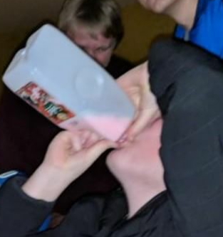

My name is Erik Berg, I'm a student at Rousemount High School, and I'm mad into computer science. My first experience with computer science was at age 11, learning JavaScript at Codecademy. I became familiar with javascript throughout middle school, making spambots in GoogleScripts and screwing around with websites. I then began high school, and began to mess around with Java, SQL, and AutoItV3. In Junior year I took APCS, learning Java using Eclipse and Processing. I really liked working with Processing, and I began to create sketches, designs, and animations outside of class, usually doing twice as much work at home than in class. It was around this time that I began learning SQL. I have long been interested in a career as a database administrator, and fluency in SQL is a highly valued skill in such a field.
